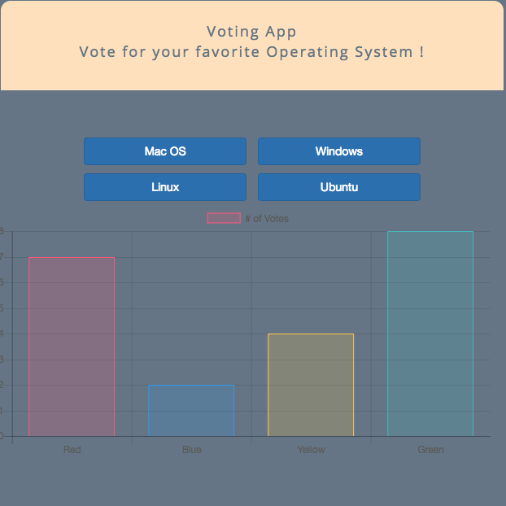
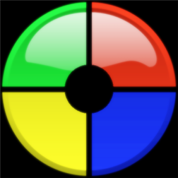

Greetings, I'm Eric!
JavaScript stacks, on the Front End using HTML5, CSS3 and SASS, traditional JavaScript and ES6 implementations, VueJS, jQuery and Bootstrap/Media Queries; with additional familiarity in AJAX requests,REST APIs, and WebPack bundling!NodeJS, PHP, Apache, Express, Heroku and EJS; and database tools like MongoDB, Post and MySQL. I also have experience using tools like Sketch, Photoshop, XD, PerfectPixel and WordPress development.

